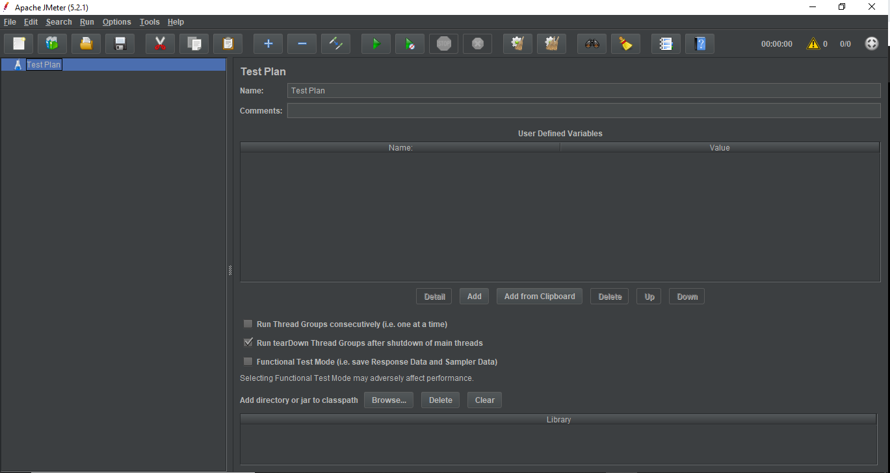
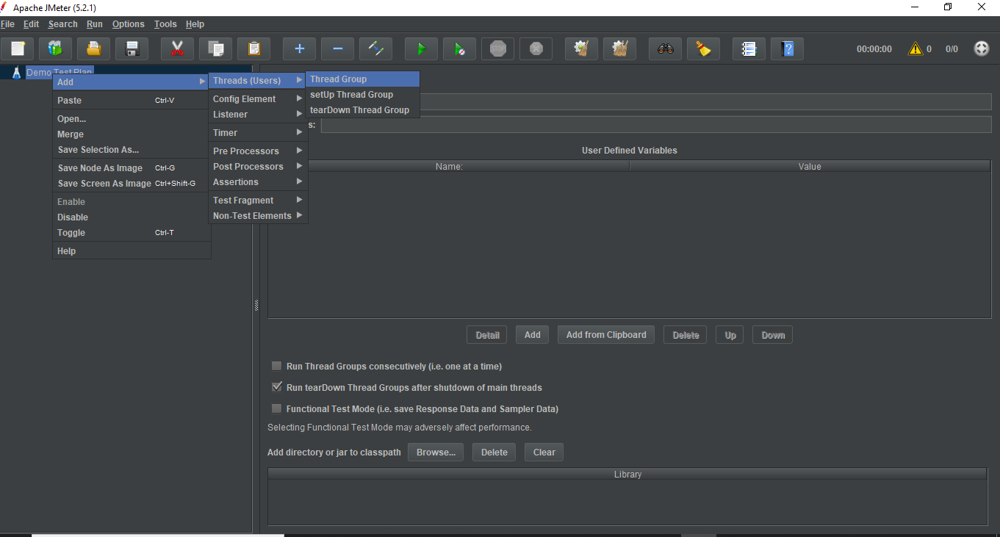
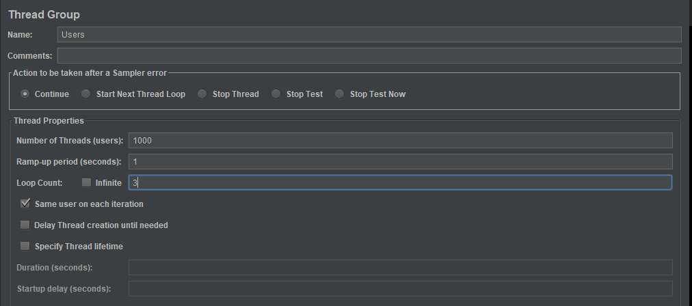
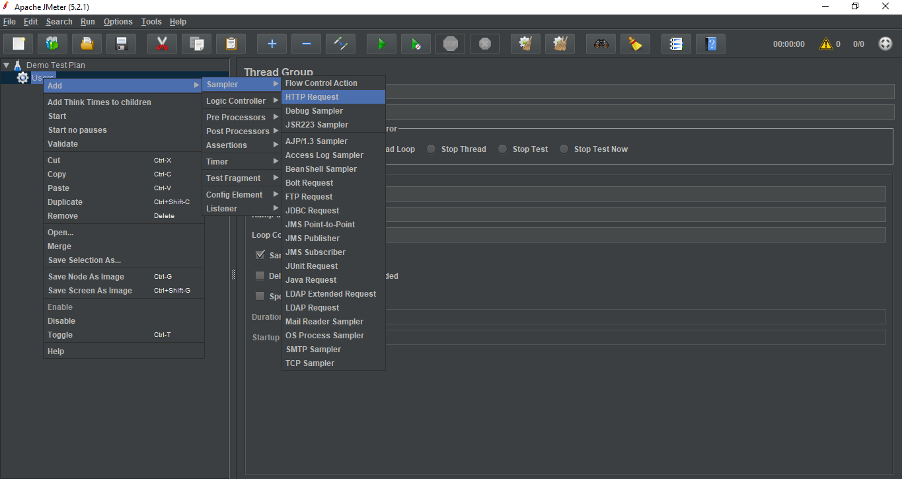
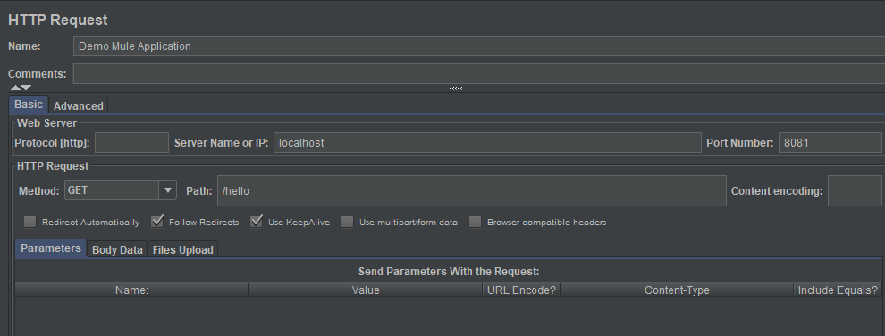
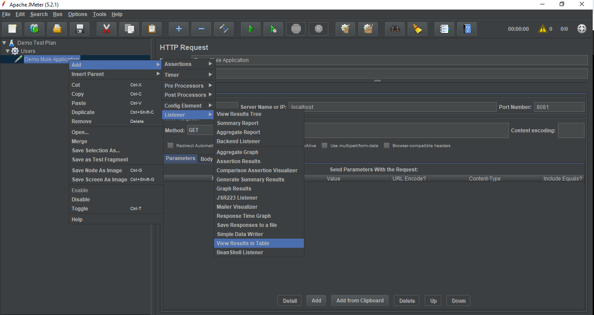
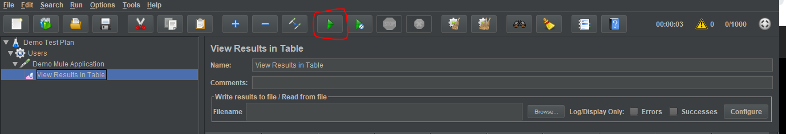
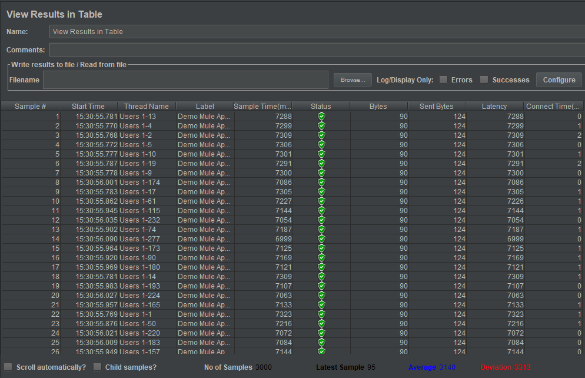
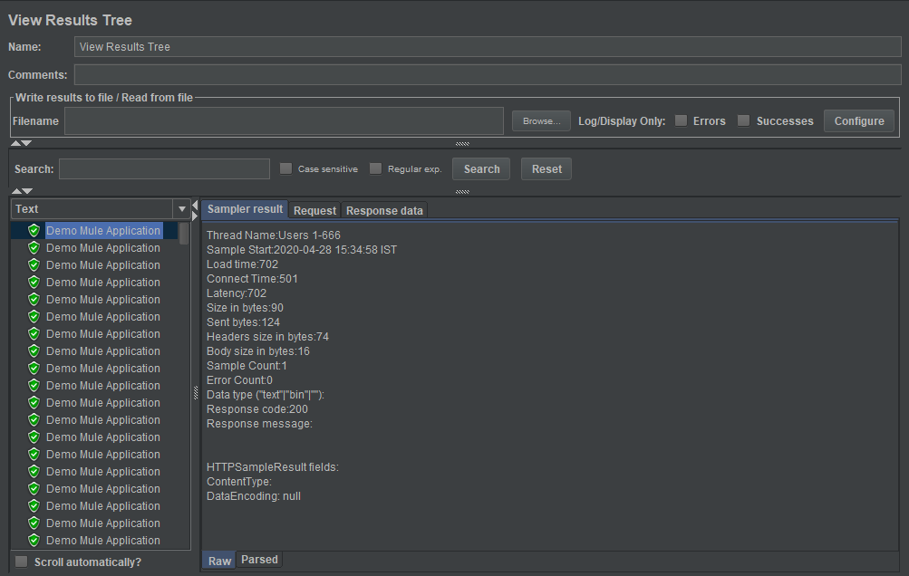
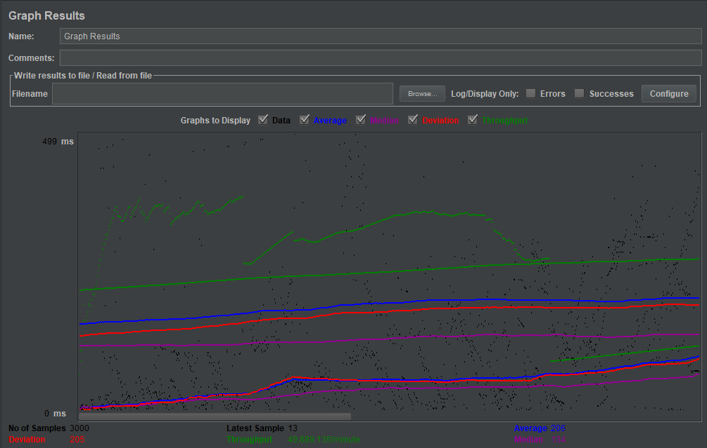

Load Testing Mule applications using Apache JMeter
Pre Requisites Installations:-
Java 8 version or higher (Requires JVM 6 or higher)
Apache JMeter - http://jmeter.apache.org/download_jmeter.cgi
Introduction
Load testing is a part of Non - Functional testing. It is a performance testing technique using which the response of the system is measured under various load conditions. Load testing is the process of putting demand on a software system or computing device and measuring its response. It helps identify the maximum capacity of an application as well as any bottlenecks and determine which element causes degradation. Load testing can also be done in the field to obtain a qualitative idea of how well a system functions in the real world.
Why use Load testing
- It helps us in identifying the maximum operating capacity of the software.
- Determines whether the current environment infrastructure is sufficient to run the application.
- When the system has to deal with a large number of users then such a system has to undergo load testing.
- Railway ticket booking system, E-commerce websites, and others who have to deal in and out with users.
There are various tools available for Load Testing like Apache JMeter, SOAP UI, MicroFocus LoadRunner, and others for testing any web-based application, however, in this blog focuses on load testing using Apache Jmeter.
Apache JMeter
Apache JMeter is the most preferable tool used by Testers worldwide for Load and Performance testing.
Advantages of JMeter
- Open Source - As it is built on the Java platform, it is platform-independent and highly extensible.
- User Friendly - It has a comprehensive UI that helps in creating test plans and configure elements.
- Support - An open-source community helps the users of JMeter using the product seamlessly.
- Documentation - It has robust and clear documentation with which any user can install the application and configure test settings from scratch and generate final reports.
- Recording - It allows users to record HTTP or HTTPS requests and create test plans from it.
- Reporting - It generates reports in many forms which help in determining the performance of the application.
Elements of JMeter:-
- Thread Group - It is a collection of multiple threads where each thread represents one user using the application.
- Samplers - This decides which protocol to use while sending a message. For example, HTTP, FTP, etc.
- Configuration - It sets the configuration which is needed to run test cases.
- Listeners - They show the results of the test execution in different formats like Tree, Table, Graph, and Log.
Let us now see how we can use Apache JMeter to test our Mule applications.
Usage
- First, unzip the zip file downloaded from the link mentioned in the Prerequisite section.
- Open the unzipped folder and navigate to the /bin directory.
- Depending on the operating system you are using, run the jmeter.bat file for Windows and jmeter.sh file for Linux based systems.
Once you run the respective file, you will see the JMeter UI like below.

- To start Load Testing, create a Test Plan. By default, there would be a test plan created, so rename it accordingly or create a new one if needed.
- Add new Thread Group by right-clicking on Test Plan > Add > Thread(Users) > Thread Group.
Threads are nothing but the users that are going to access the application in the given point of time.
- Configure the Thread properties based on your requirement.

- Now, let’s add a sampler that we want to use according to the request that we want to make to the application. The application I want to perform load testing requires an HTTP sampler, so let’s configure the same as below.
Right click on Thread Group created then click on Add > Sampler > HTTP Request.

- After adding the sampler, configure its properties accordingly.
Configure its components pointing to your API endpoint:
- Protocol
- Server Name or IP
- Port
- Method
- URI Path

- Now we need to add a view to display our test results. For that we make use of Listener.
- To add a Listener, right click on the Sampler component created and then select Add > Listener > View Results in Table
There are multiple options like Tree, Table, and Graph in which you can display your test results. Choose your option based on your requirement.

- Once the Listener is added, you must save the Test Plan to execute it. Save the Test Plan.
- Execute the Test Plan by clicking the play button from the top menu bar.

- Based on your listener selection, the results will be displayed in that particular format.
Results in Table will be displayed as below.

It provides a thorough understanding on how many requests have been successfully completed and how many requests failed.
- Similarly you can create results in Tree and Graphs as below
Tree:-
Graph:-
